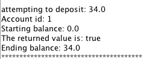

How to Withdraw/Deposit Funds
- Using the drop down menu under Accounts, select the Account ID of the account you would like to withdraw/deposit with.

- Enter how much you would like to deposit/withdraw in the box under Amount.
- To the right of the box, click the circle next to Deposit or Withdraw.
- Click "Execute."
- If you withdrew more than your current balance from a Checking Account, then you will be charged an Overdraft fee of $30 which will also be deducted from the balance.
- A screen will appear indicating the amount you attempted to deposit/withdraw, the ID of the account, the starting/ending balance, and whether the action occurred. If the returned value is "true," the withdrawal/deposit was successful. If it is "false," then it was unsuccessful.
- A few conditions will cause the action to be unsuccessful:
- Withdrawing/Depositing a negative amount.
- Attempting to withdraw too much from your savings account. This is when withdrawing would cause the balance to drop below the minimum required balance.
- Attempting to withdraw from a savings account too many times within a month.
